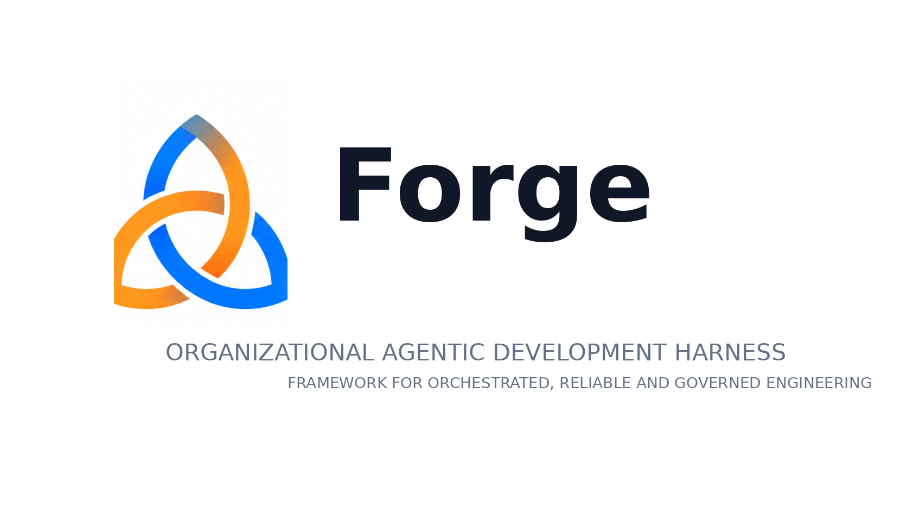

EDS AI Workflow (Eitri Agentic Dev Workflow)
EDS AI Workflow (Eitri Agentic Dev Workflow)
The EDS AI Workflow is how EDS teams carry out product implementation with AI agents. It runs from the product owner’s requirements, through the six stages of Eitri, the developer harness, to a verified change. Use this overview to see the whole route and who owns each handoff, then open the page for the part you want to understand.
The CoreX EDS team maintains this workflow. The workflow is made of skills: packaged instructions that an AI agent runs for one task, such as writing a specification or reviewing a change. It builds on Matt Pocock’s engineering skills and adds EDS skills for coding, review and verification. For the strategy behind it, including the implementation loop, assurance model, autonomy and measures, read Product implementation.

The inspiration behind EITRI
A digital forge for trusted software
EITRI takes its name from Eitri, Marvel’s Dwarf King and master blacksmith, who helps Thor forge Stormbreaker. The name symbolises a digital forge where AI agents use organisational knowledge and engineering standards to turn ideas into software.
The harness brings together engineering guidance, reusable agent skills and automated checks to support secure, reliable software delivery. The forging metaphor describes that aim; the team still needs evidence that the software meets applicable requirements.
Tagline: From Forging Legendary Weapons to Forging Trusted Software.
On this page · 4 steps to use this section
- See the six stagesFollow a user story from the PRD handoff to a verified change and a retrospective.
- Check ownershipConfirm who owns the PRD, the specification, the tickets and each sign-off.
- Apply the principlesUse layered context, vertical slices and independent reviews.
- Diagnose & measureTrace any failure to one of five harness layers and track workflow health.
On this page
Find the page you need
| Page | Roles involved | What it explains |
|---|---|---|
| PO/BA harness | Product owner (PO), business analyst (BA) | How a business need becomes a product requirements document (PRD), through one of three paths. |
| Developer harness | Architect, Tech Lead, developer | How Eitri takes one user story through six stages, from clarifying questions to verified code and a retrospective. |
The second half of this page holds working principles: guidance on operating the harness well that does not depend on a specific skill.
Follow a story through six stages
A product requirements document (PRD) records what to build and why. Eitri takes one of its user stories at a time through six stages: Clarify, Specify, Slice, Implement, Verify and Retrospect. A person signs off the specification after Specify, and the tickets after Slice.
Solid arrows show forward flow. Cut-corner blue shapes mark the two human sign-offs. Dashed arrows show revisions requested at a sign-off and the return to Clarify for the next story.
The PO or BA hands over the PRD. Clarify resolves the story’s open questions, and Specify writes them up as the technical requirements document (TRD), which a person signs off. Slice breaks the approved specification into small tickets, each delivering a working piece of the story, and a person signs those off before any code is written.
Implement builds every ticket test-first and ends with a code review and fixes. Verify runs independent maintainability and IM8 reviews, then tests the user stories end to end. Retrospect turns what went wrong into better rules, checks and skills for the next story.
The Developer harness page describes each stage and its skills.
Eitri covers Plan, Slice, Implement and Verify in the six-stage implementation loop; its Retrospect stage improves the harness itself. Release, progressive rollout, observation and learning from production evidence sit outside the harness. Use the Product implementation guidance for those stages.
Check the installed version
This guide describes Eitri version 1.0. Before relying on a skill or a sign-off, confirm the installed setup with the workflow owner and keep its version with the evidence:
- Record the installed Eitri and Matt Pocock skill versions. The IM8 review skill is installed separately, so record its version too.
- Check that every skill the stages use is installed in the repository.
- Confirm who signs off the specification and the tickets, and who approves the merge.
This guide does not identify the version installed in your environment. For guided practice, open the Eitri training.
Know who owns each artefact
The PRD and the TRD are different agreements with different owners. The PRD states what the product needs to do and why, for the whole feature. The TRD is written for one user story at a time and adds how that story fits the architecture, the codebase and the applicable policies.
| Artefact | Accountable role | Produced in | Contains |
|---|---|---|---|
| PRD | PO / BA | One of the three PO/BA paths | Business-level user stories, acceptance criteria, feature scope and, where applicable, an HTML prototype |
| User story level TRD | Architect / Tech Lead | The Clarify and Specify stages of the developer harness | Technical constraints, architecture decisions, alignment with the domain model, codebase context, testing decisions and exclusions |
A technical PO or BA can also hand over an early-draft TRD. In that case the developer harness refines the draft instead of starting again.
| Role | Starts with | Owns | Hands off |
|---|---|---|---|
| PO / BA | A business problem or opportunity | Requirements path, user stories, acceptance criteria, optional prototype | PRD and specification files |
| Architect / Tech Lead | The handed-off PRD | Clarifying each user story and its TRD, including architecture and library decisions | A specification ready for sign-off |
| Developer | The signed-off specification | Tickets, implementation, the Verify reviews and end-to-end evidence | A merge request (MR) with acceptance evidence |
| Tech Lead / reviewers | The specification, the tickets and the MR | Reviews at each sign-off and of the MR | A signed-off specification and tickets, and an approved merge |
Before starting the story, assign who drafts each TRD, who reviews it and who gives each of the two sign-offs.
Working principles
Use these seven principles to operate the harness:
- Provide context before important decisions. Make business goals, architecture, policy and coding constraints available early.
- Load only what is relevant. Reveal standards progressively instead of placing the whole knowledge base in every prompt.
- Use AI as the first reviewer. Challenge generated plans, specifications and tickets before accepting them.
- Settle the design before coding. Resolve open decisions, architecture and library choices before slicing, not as late clean-up.
- Slice work vertically. Each issue delivers a demonstrable outcome across the layers it needs, rather than a separate batch of schema, API or interface work.
- Build review and correction into implementation. Build test-first, review the result and fix the findings before verification.
- Keep people accountable for intent and risk. Automation can do the work; people sign off the specification and the tickets, and approve the merge.
An agent that reports “done” has not shown that the work is done. Let an automated check, an independent reviewer or a separate evaluator decide whether the work meets its stop condition; the agent that wrote the code is never the only judge. In Eitri, the code review, the Verify reviews and the end-to-end tests play this role.
Give agents the right context
AI output depends on the context it receives. Keep context explicit, versioned, selective and traceable to the decision it influenced. This section explains how to organise it.
Layer instructions so an agent reads a short entry point first and loads further detail only when a task calls for it:
- A short entry map: the project’s purpose, how to run and verify it, its global constraints and where to find more.
- Constraints: the few must and must-not rules for security, privacy, architecture, data handling and business red lines. Rules that can be checked mechanically belong in tests or policy checks.
- Topic guides: guidance for areas such as APIs, databases, interfaces, testing and deployment, loaded on demand.
- Module-local context: responsibilities, interfaces and domain terms, kept near the code and updated with it.
- Decision and state records: architecture decisions, progress, blockers and the next action, so a fresh session can continue the work.
Record decisions and progress in the repository as the work proceeds. A model that can hold more context does not replace durable records.
Diagnose the harness when work fails
The harness is everything around the model: instructions, tools, environment, state and feedback. A capable model can still fail because one of these is weak. Strengthen the weak layer rather than assuming the model is the only problem. Fix the cause of a class of failure, not only the current increment. In Eitri, this is the job of the Retrospect stage.
Solid arrows trace an observed failure to one of the five harness layers inside the shaded container, then to strengthening that layer and recording the fix.
Start from the symptom and ask which of the five layers let it through. In the figure, verification feedback is the weak layer, so the team improves its checks rather than retrying the same prompt. Recording the failure helps the next session avoid it. The table pairs each layer with its typical symptom and a response.
| Layer | Typical symptom | Response |
|---|---|---|
| Task specification | Plausible implementation, wrong behaviour | Tighten the PRD or TRD, acceptance criteria, exclusions and ticket scope, then review the tickets again. |
| Context provision | Breaks a domain, security, architecture or interface rule the agent could not see | Put the rule in the repository and route it through the right context source. |
| Execution environment | Time lost on dependencies, connectivity or setup | Standardise initialisation and keep a reproducible sandbox. |
| Verification feedback | The agent reports “done”, but the behaviour is still broken | Add or tighten a review, test or linter rule, and make failure messages actionable. |
| State management | A new session repeats work or reverses an earlier decision | Record decisions, evidence, blockers and the next action in the repository and on the ticket. |
Measure workflow health
Use the following measures to assess workflow health. They complement the delivery, product and governance measures in the implementation guidance.
- Verified completion rate: how many started tickets reach a passing state with independent evidence.
- Verification gap: how often an agent’s claim of completion fails independent validation.
- Rebuild cost: the time or tokens a fresh session needs to regain a working, informed state.
- Tokens per verified ticket: the cost of each independently passing ticket, split by planning, implementation, verification and recovery.
- Harness debt: stale, duplicated, contradictory or unenforced instructions and controls.
Method under consideration: SPDD
The Eitri training describes a direction towards Structured-Prompt-Driven Development (SPDD), developed within Thoughtworks. Confirm adoption status and ownership with the workflow owner. Before using it with Eitri, test specification artefacts, skill behaviour and review gates against the target workflow.
Eitri version: confirm the installed skills and sign-offs.
Sources
References last checked: .
- CoreX EDS team. Eitri — README and CHANGELOG, version 1.0.0; internal repository. Primary workflow source for the six stages, the two review points before slicing and implementation, and the skills used; it takes priority over the older operating handbook. The internal repository is unavailable from the public site; confirm the installed version with the workflow owner. Used in the six stages, installed version, roles and artefacts.
- EDS. EDS operating handbook, internal edition not supplied. Retained only where it does not conflict with the higher-priority Eitri README: the seven working principles, three of which were adjusted to the version 1.0 stages, instruction layers, harness diagnosis, workflow-health measures and fictional example. The document is unavailable in this checkout and current owner endorsement of this retained guidance is not verified; the example is illustrative, not deployment evidence. Used in Working principles, Context for agents, Diagnose failures, Workflow health.
- Matt Pocock. Engineering skills — upstream skill set, live repository; installed revision not identified. Underlying investigation, specification, slicing, implementation and review skills; the descriptions on this page explain their use or adaptation in the documented EDS workflow, not a guarantee of current upstream names or behaviour. Used in the workflow foundations.
- SG Tech Stack. Eitri AI coding workflow — self-paced training. Live, version-dependent public training, not certification of an installed harness. The public course contains mixed revisions. Lesson 1 now uses S1 setup, S2 planning with
/project-horizon, S3 architecture guardrails and developer Steps 1–5; it marks its five-phase video and interactive diagram as earlier material. The public course predates Eitri version 1.0; this guide follows the version 1.0 six-stage cycle. Confirm the applicable harness version with the workflow owner before transferring commands. Used in installed version guidance, the organisational SPDD direction. See current skills lesson. - Wei Zhang and Jessie Jie Xia, Thoughtworks. Structured-Prompt-Driven Development (SPDD). Primary author account of maintained prompt artefacts, alignment and iterative review. It does not establish EDS adoption decisions or Eitri compatibility; confirm ownership and test against the target workflow. Used in Method under consideration: SPDD.
- EDS. Eitri organisational harness overview video, publication date and revision not supplied. Open in Google Vids; embedded preview. Supplementary orientation retained with its original access links; access and internal implementation are not independently certified. Used in the page introduction.